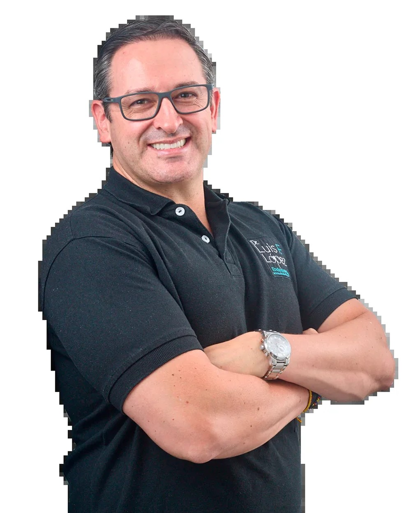
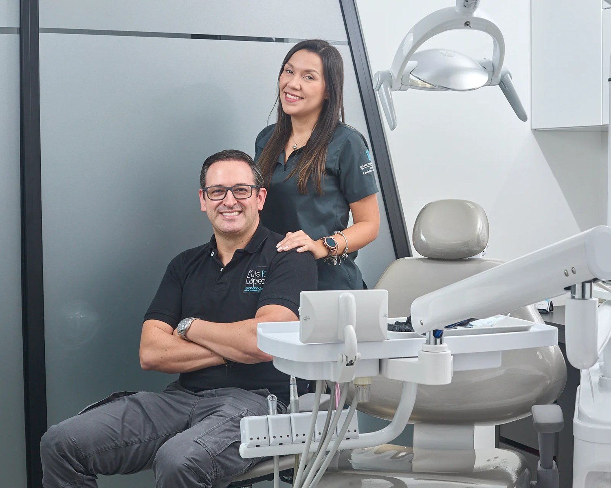
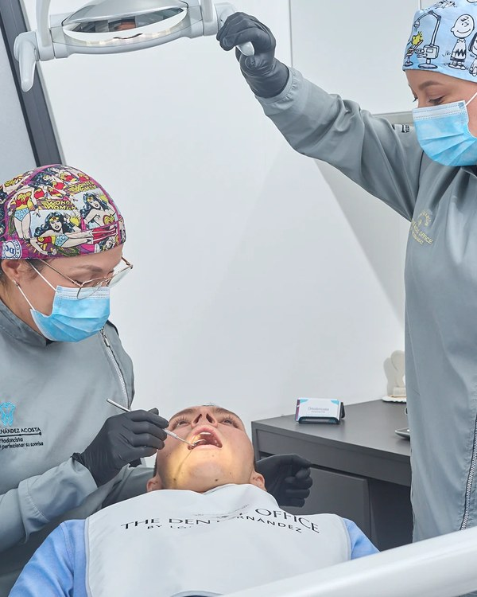
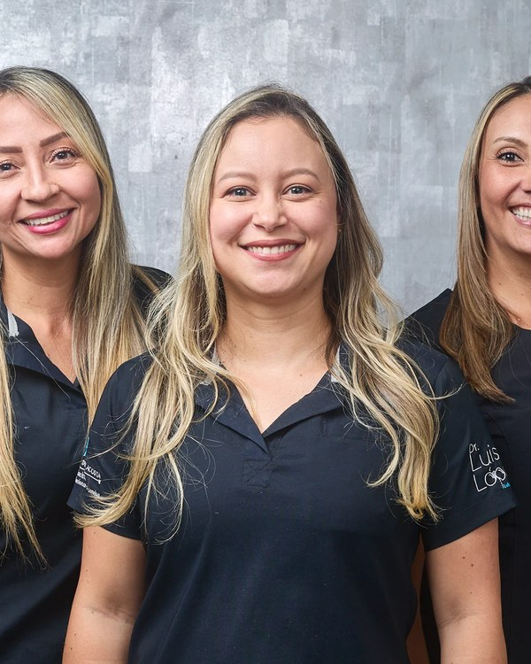
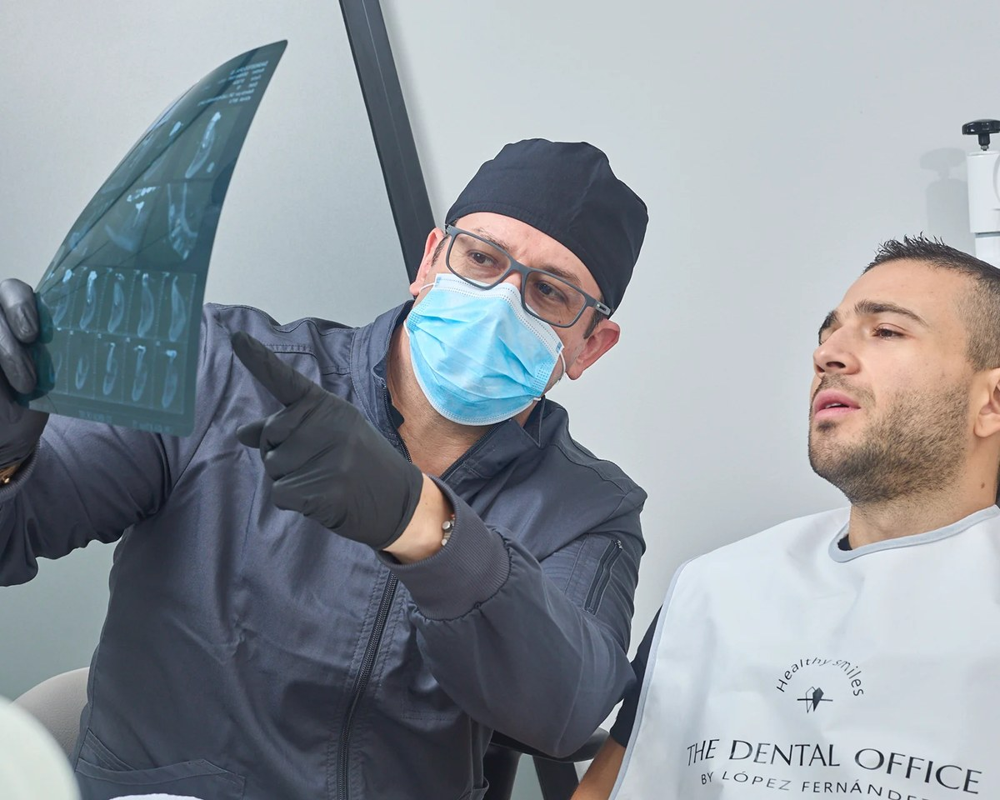
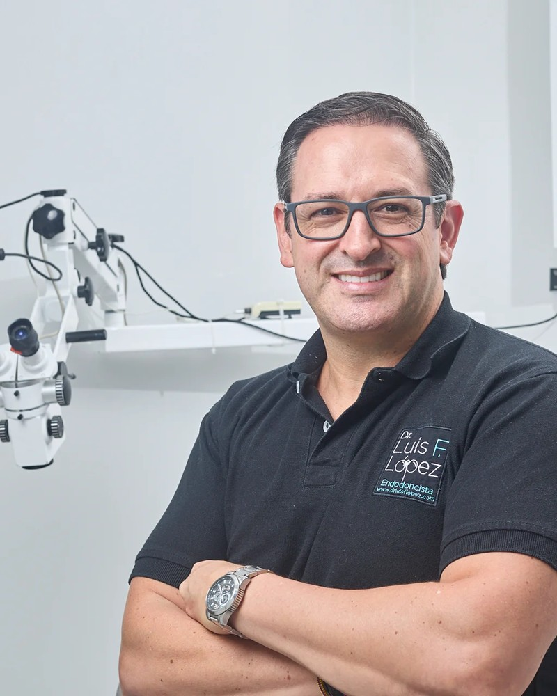
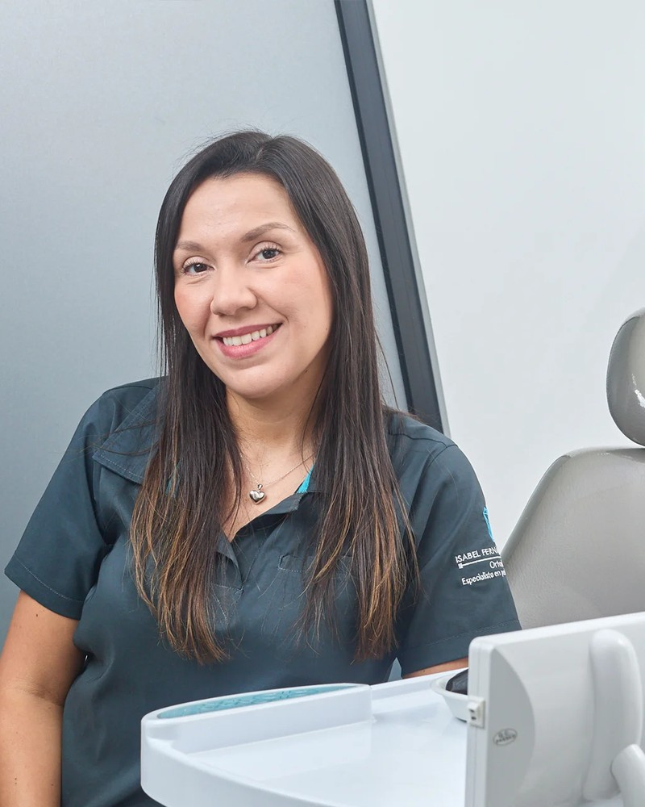

Especialistas con más de 20 años de experiencia en el cuidado integral de su salud oral. Salvamos sus dientes naturales con tecnología de microscopía endodóntica, en nuestra sede de El Poblado.


Somos un grupo de especialistas con más de 20 años de experiencia en el cuidado de su salud oral, a través de servicios integrales y seguros. Recuperar su calidad de vida sí es posible, solo debe confiar su sonrisa en nosotros y le acompañaremos en cada paso.
Nuestro consultorio está ubicado en el complejo Sao Paulo Plaza, oficina 617, en pleno El Poblado, Medellín. Un espacio diseñado para que cada paciente se sienta acompañado, escuchado y bien tratado desde la primera consulta.
Conózcanos

Endodoncia microscópica, ortodoncia tradicional e invisible, rehabilitación oral, implantes dentales, diseño de sonrisa y cirugía periapical. Todo en un mismo consultorio, coordinado entre especialistas para que su tratamiento avance sin que tenga que ir a varias clínicas.
Ver serviciosTrayectoria comprobada del Dr. Luis Fernando López como especialista en endodoncia. Participación en congresos internacionales y actualización continua en nuevas tecnologías.
Aumento hasta 32x con iluminación directa. Procedimientos más precisos, conservadores y rápidos. Mayor preservación del diente natural y mejor pronóstico.
El Dr. López atiende pacientes nacionales e internacionales. Si viaja por turismo dental desde EE.UU. o el exterior, le acompañamos antes, durante y después.
TRATAMIENTOS ESPECIALIZADOS
Salvamos sus dientes naturales con la última tecnología. Removemos el nervio afectado, desinfectamos el conducto y sellamos con gutapercha. Sin dolor: contamos con servicio de sedación consciente.
AgendarCuando una endodoncia previa falla, volvemos a sellar y desinfectar el diente. Aislamiento absoluto, eliminación del material antiguo y nueva obturación con materiales estériles.
AgendarTambién conocida como apicectomía. Drenamos la inflamación o infección localizada en la punta de la raíz cuando la endodoncia no es suficiente. Procedimiento ambulatorio con anestesia local.
AgendarDiseño de sonrisa armoniosa y natural. Lentes cerámicos, microdiseño en resina, aclaramiento dental y carillas. Tratamientos personalizados según su diagnóstico único.
AgendarRecuperamos la posición correcta de sus dientes con brackets de alta calidad y estética. Mejora la mordida, la masticación y la armonía facial. Tratamiento planeado tras diagnóstico completo.
AgendarAlineadores transparentes removibles, casi imperceptibles. Hechos a medida con escaneo tridimensional y planeación digital. Resultados efectivos en corto tiempo, sin afectar su día a día.
AgendarRestauramos piezas dentales mediante prótesis fijas, removibles o implantología. Devolvemos funcionalidad y estética tras pérdida de dientes por trauma, caries o enfermedad periodontal.
AgendarTornillo de titanio que se fusiona con el hueso, soporte estable para diente artificial. No desgasta dientes adyacentes. Diagnóstico previo con tomografía 3D para asegurar éxito del procedimiento.
AgendarLa endodoncia microscópica es una técnica que permite realizar procedimientos mucho más precisos y mínimamente invasivos. El microscopio aumenta hasta 32 veces el tamaño del diente, ilumina la zona intervenida y ofrece visibilidad que no es posible a simple vista.

Dos especialistas, una visión compartida: brindar atención de excelencia con compromiso humano y formación continua.

Universidad CES Medellín · Colegio Odontológico Colombiano
"Mi especialidad me permite eliminar el dolor y los focos de infección, causantes de la mayoría de los problemas dentales. Participo en congresos internacionales para integrar nuevas tecnologías a los procedimientos que practico."

Universidad CES Medellín · +12 años de experiencia
"Me apasiona ayudar a mis pacientes a sonreír de nuevo sin temores. Es prioridad para mí estar actualizada y ofrecer tratamientos más efectivos, cómodos, estéticos, rápidos y confiables."
Cra 43a # 18 sur 135, oficina 617
Edificio Sao Paulo Plaza · El Poblado
Medellín, Antioquia
5.0 ★ EN GOOGLE · PACIENTES NACIONALES E INTERNACIONALES
"Lo mejor de lo mejor. Valió la pena el viaje desde Boston. Muy atentos, serviciales, accesibles y flexibles con las citas."
"Hice contacto con el Dr. López por WhatsApp desde Estados Unidos. Fue muy transparente: yo pensaba que necesitaba mucho trabajo y al evaluarme me dijo que solo necesitaba limpieza y blanqueamiento. Recomiendo a familiares y amigos."
"Fui por un tratamiento de Invisalign con la Dra. Isabel. Resido en EE.UU. y ella me hacía videollamadas para explicarme cada detalle. Una experiencia agradable y sin contratiempos. Si pudiera darles más estrellas, lo haría."
Lo recibimos en nuestra sede de El Poblado, Medellín. Diagnóstico personalizado y plan de tratamiento por escrito, sin compromiso, en su primera consulta.